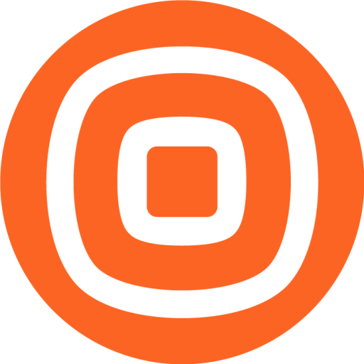

Vitor Fujimoto
Statistics & Data Science student at UFPR. Estudante de Estatística e Ciência de Dados na UFPR.
→ See what I've built→ Veja o que eu construíAboutSobre
I work at the Statistics and Data Science Office (CECD) of the Federal University of Paraná, with dashboards, technical reports and indicator monitoring.
Sou servidor na Coordenadoria de Estatística e Ciência de Dados (CECD) da Universidade Federal do Paraná, onde trabalho com dashboards, relatórios técnicos e monitoramento de indicadores.
With two teammates, I built a pair trading pipeline for the Itaú Asset university Quant challenge, where we placed in the Top 25 nationwide.
Com dois colegas, construí um pipeline de pair trading para o desafio universitário Quant da Itaú Asset, em que ficamos entre as 25 melhores equipes do país.
I'm also a co-author of a peer-reviewed paper on predicting student dropout with machine learning.
I'm most interested in business intelligence, statistical modeling, process optimization and finance.
Também sou coautor de um artigo científico sobre previsão de evasão estudantil com aprendizado de máquina.
Tenho mais interesse em BI, modelagem estatística, otimização de processos e finanças.
Work ExperienceExperiência
Federal University of ParanáUniversidade Federal do Paraná
Nov 2023 – Presentnov 2023 – atual- Develop dashboards and web tools that turn university data into clear indicators (Python, Dash, SQL).
- Produce technical reports and monitor institutional indicators.
- Deploy and maintain the team's applications on Linux, versioned with Git.
- Desenvolvo dashboards e ferramentas web que transformam os dados da universidade em indicadores claros (Python, Dash, SQL).
- Elaboro relatórios técnicos e acompanho indicadores institucionais.
- Publico e mantenho as aplicações da equipe em Linux, com versionamento em Git.

Infobip
Aug 2023 – Oct 2023ago 2023 – out 2023EducationFormação
Federal University of ParanáUniversidade Federal do Paraná
2024 – 2028SkillsHabilidades
PublicationsPublicações
Inteligência de Dados e Modelagem Preditiva na Gestão Universitária: O Observatório de Evasão da UFPR como Ferramenta de Apoio à Decisão
2026How a public university combines dashboards and a machine-learning dropout risk calculator to support students before they leave their course.
Como uma universidade pública combina dashboards e uma calculadora de risco de evasão com aprendizado de máquina para apoiar o estudante antes que ele deixe o curso.
Things I've builtO que eu construí
From quantitative finance research to data tools for the university.
Da pesquisa em finanças quantitativas a ferramentas de dados para a universidade.
-
PT2025
Pair Trading B3
Itaú Asset university Quant challenge · Top 25 nationwideDesafio universitário Quant da Itaú Asset · Top 25 do paísStatistical arbitrage pipeline on 7 years of official B3 data: liquidity screening, Engle-Granger cointegration, Hurst exponent, tail dependence and a z-score backtester with costs and slippage.
Pipeline de arbitragem estatística com 7 anos de dados oficiais da B3: filtro de liquidez, cointegração de Engle-Granger, expoente de Hurst, dependência de cauda e backtest com custos e derrapagem.
-
OngoingEm produção
UFPR Data ToolsFerramentas de dados da UFPR
CECD · UFPRDashboards and web apps that turn the university's data into clear, public indicators, used by the administration and by anyone who wants to follow the university.
Dashboards e aplicações web que transformam os dados da universidade em indicadores claros e públicos, usados pela gestão e por qualquer pessoa que queira acompanhar a universidade.
See the toolsVer ferramentas Python · Dash · SQL
Get in touchVamos conversar
Open to data analyst, BI and quantitative roles, in Brazil or abroad. Reach me at vitorhiei@ufpr.br.
Aberto a vagas de análise de dados, BI e áreas quantitativas, no Brasil ou fora. Fale comigo em vitorhiei@ufpr.br.